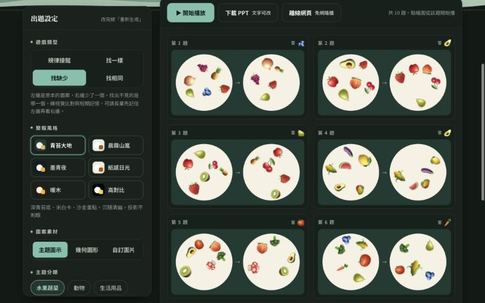
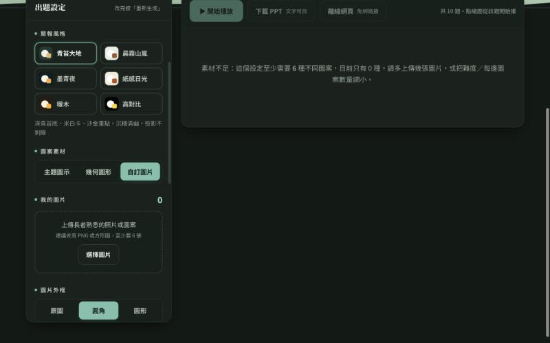
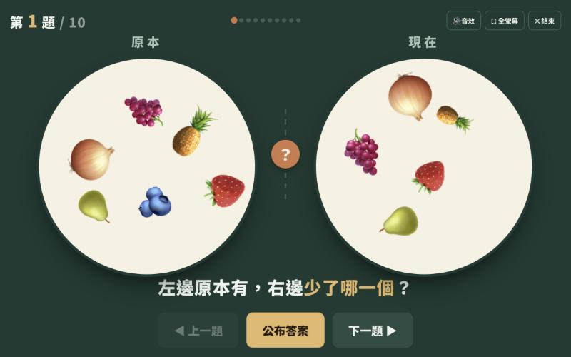
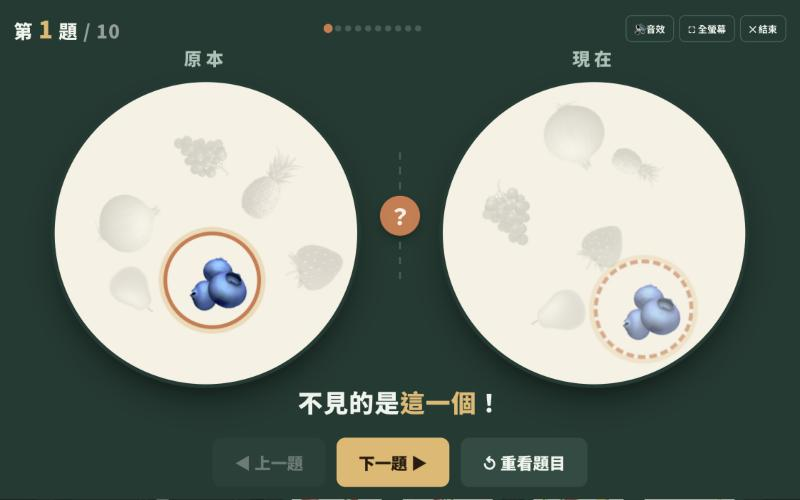

做出「可以上架」的東西：
GitHub 個人網頁、網頁型簡報、目標九宮格程式，
以及參考他人的圖片、影片、簡報風格做素材
今天每一個成品都會變成一個網址：手機掃得到、LINE 傳得出去、衛教室貼得上牆。GitHub、Gemini 分享、Netlify 三條上架路都會比一比。
這份簡報本身就是一個 HTML 檔，今天第二段會教你做一份。
按 O 看全部頁面。鍵盤 ← → 翻頁、F 全螢幕、O 總覽。
授課：鍾孟修 職能治療師（愛迪樂）
兩小時，一個破冰、四件事，帶走三個網址
| 10:00 | 破冰：長者遊戲簡報生成器，玩 3 題「找缺少」，順便看一個上架好的網頁長什麼樣。 |
| 10:08 | 回顧 + 上線：第 2 堂的 GitHub 流程再走一次，今天所有成品都靠它上架。 |
| 10:25 | 網頁型簡報：一個 HTML 檔就是一份簡報，請 AI 做一份衛教簡報並上傳。 |
| 10:55 | 休息 10 分鐘 |
| 11:05 | 目標九宮格程式：從大谷翔平的 81 格，做出病人可以填、可以印的網頁。 |
| 11:35 | 參考風格做素材：圖片、影片、簡報、音樂，用「參考風格」而不是「抄作品」。 |
| 11:55 | 課後任務與下堂預告（11/23 知識庫助手） |
帶走的三個網址（首頁連到全部）
① 你的username.github.io：自我介紹網頁（第 2 堂做的，今天補完）
② …/slides.html：一份衛教主題的網頁型簡報
③ …/mandala.html：病人可以填的目標九宮格
破冰：左邊原本有，右邊少了哪一個？（長者遊戲簡報生成器）
怎麼玩
- 講師按「開始播放」，全場一起看左邊 5 秒。
- 看右邊，舉手說少了哪一個。
- 「公布答案」，連玩 3 題，第 3 題把數量調到 9。
這個遊戲本身就是一個上架好的網頁：有網址、手機能開、能下載 PPT。今天結束前，你也會有一個。
自己做一份：選玩法、調難度、上傳自己的圖、下載 PPT




現在做（手機或電腦都可以）
把遊戲類型改成找相同，主題選身體保健，數量調到 8，題目數 6，下載 PPT 看看封面標題能不能改。
為什麼要「上架」？因為檔案傳不出去，網址傳得出去
寄檔案的世界
PPT 要裝 Office 才開得了、手機排版會跑掉、改一版就要重寄一次、LINE 群裡找不到最新版。
一個網址的世界
手機、平板、電腦打開都一樣；改好重新上傳，網址不變；印成 QR code 貼在衛教室、放進衛教單張。
今天做的三樣東西
自我介紹網頁、網頁型簡報、目標九宮格。三個都是 HTML 檔，上架流程完全一樣，學一次用三次。
第 2 堂的五步驟，今天再走一次（10 分鐘）
- 登入 github.com，右上「＋」→「New repository」
- Repository name 一字不差填 你的username.github.io，Public，不勾 README
- 點藍色小字「uploading an existing file」，把 index.html 拖進去
- 保持「Commit directly to the main branch」→ 綠色「Commit changes」
- 等 1～2 分鐘，打開 https://你的username.github.io；沒出現就到 Settings → Pages 確認 Branch 是 main、/ (root)


還沒有 index.html？用這段提示語 5 分鐘做一個
三家在哪裡拿檔案
Claude：右側直接顯示網頁，上方「下載」。
Gemini：開「任務」或 Canvas 才能預覽；從程式碼複製貼到記事本存成 index.html。
ChatGPT：程式碼框右上「複製」，或請它「直接給我下載檔案」。
以 index.html 為首頁：每做一個新網頁，就把連結加進首頁，病人只記一個網址
同一個倉庫，一個首頁帶所有作品
index.html → 你的username.github.io（首頁：自我介紹＋作品連結）
slides.html → …/slides.html（網頁型簡報）
mandala.html → …/mandala.html（目標九宮格）
檔名只用英文小寫、數字、減號；全部拖進同一個倉庫。
上架有三條路：Gemini 一鍵分享、GitHub Pages、Netlify，差在哪？
| Gemini 分享連結 | GitHub Pages（今天主線） | Netlify（拖資料夾就上線） | |
|---|---|---|---|
| 怎麼上架 | 在「任務」做好網頁 → 右上「分享和匯出」→「分享」→ 建立公開連結。30 秒。 | 註冊 → 建倉庫 → 拖檔案 → 等 1～2 分鐘。第一次約 20 分鐘，之後每次 2 分鐘。 | 登入 netlify.com → Drop 頁面把整個資料夾拖進去 → 立刻有網址。 |
| 網址 | g.co/gemini/share/… 一串亂碼，不能自訂。 | 你的username.github.io/檔名.html，好記、可印 QR。 | 亂碼.netlify.app，可以改成 自訂名.netlify.app。 |
| 能放幾個檔案 | 一次一個網頁（那個對話的 Canvas）。 | 很多個：index、slides、mandala 放同一倉庫，首頁互連。 | 很多個，整個資料夾一起上。 |
| 更新 | 改完對話裡的版本，連結自動更新。 | 重新上傳覆蓋同名檔案。 | 再拖一次資料夾。 |
| 會不會消失 | 刪掉那則對話，連結就失效；Workspace 帳號可能被管理者關閉分享。 | 不刪倉庫就一直在。 | 免費方案有流量額度，個人衛教使用通常夠。 |
| 適合 | 課堂上馬上給同事看、試用版、一次性活動。 | 要長期用、要印 QR、要放很多作品。 | 不想學 GitHub、檔案很多張圖片時。 |
網頁型簡報：一個 HTML 檔，就是一份能翻頁、能投影、手機能開的簡報
你現在看的這份，就是。
- 不用安裝 PowerPoint，瀏覽器打開就能投影。
- 可以放互動：翻牌問答、計時器、點一下跳到網站。
- 手機、平板打開就是直式可讀版本。
- 改字只要再請 AI 改一句，重新上傳，網址不變。
按 F 試試全螢幕、按 O 看總覽。
| PowerPoint | Canva | 網頁型簡報 | |
|---|---|---|---|
| 打開方式 | 要有 Office | 要登入 Canva | 任何瀏覽器 |
| 分享 | 寄檔案 | 分享連結 | 一個網址 + QR |
| 互動（問答、計時） | 有限 | 有限 | 想得到就做得到 |
| 美編微調 | 最方便 | 方便 | 要用「說」的改 |
| 適合 | 院內正式簡報 | 海報、圖卡 | 團體衛教、病友教室、手機閱讀 |
提示語範本：一份 8 頁的「低血糖處理」團體衛教簡報
這段提示語的四個關鍵
單一檔案：才能直接拖上 GitHub。
頁數與每頁內容先列出來：AI 先給大綱再寫程式，錯了改大綱比改程式便宜。
長者規格寫成數字：28px、48px、高對比，不要只寫「字大一點」。
互動寫清楚動作：點一下翻面、左右滑動，AI 才知道要做什麼。
在哪裡做、怎麼預覽、怎麼改
Claude
貼提示語，右側 Artifacts 直接顯示可以翻頁的簡報。滿意就按「下載」存成 slides.html。
最適合第一次做：所見即所得。
Gemini
先開「任務」再貼提示語，右側會出現 Canvas 預覽。做好後「分享」可以直接拿到連結，或複製程式碼存檔。
「對話」模式只會給程式碼，不會預覽。
ChatGPT
貼提示語後會給程式碼框，點「複製」貼到記事本存成 slides.html，雙擊預覽。也可以開畫布（Canvas）預覽。
修改用「說」的，一次一件事
第 3 頁的六個症狀改成兩排三個，圖示放大所有頁面的字再放大 20%第 4 頁加上「方糖 3 顆＝15 克」翻頁加一個淡入效果手機直式時一頁一個重點往下排做壞了怎麼辦
把錯誤訊息或「現在變成怎樣」直接貼給它；連改三次還不對，就說「回到上一版」，或換另一家工具貼同一段提示語。
現在做：一份簡報 → slides.html → 上傳 → 手機打開
- 把上一頁提示語貼到 Claude 或 Gemini「任務」，主題可以換成你負責的衛教主題（胰島素注射、足部照護、飲食份量…）。
- 先看大綱，調整 1～2 處再讓它寫程式。
- 預覽：鍵盤能翻頁、字夠大、問答卡會翻面。
- 存成 slides.html，拖進你的 username.github.io 倉庫，Commit。
- 手機打開 https://你的username.github.io/slides.html，傳給旁邊同學看。
- 回到 AI，用第 8 頁的提示語把 slides.html 的連結加進 index.html，重新上傳覆蓋，首頁就看得到。
大谷翔平高一那年寫的 81 格
- 花卷東高中一年級，在教練帶領下用原田隆史的「目標達成表」（曼陀羅計畫表）寫下 9×9＝81 格。
- 正中央：8 球團第一指名。
- 周圍 8 格是達成它的面向：體格、控球、球質、球速 160 km/h、變化球、運氣、人品、心志。
- 外圈 64 格是每天做得到的小事。「運氣」那一格底下寫的是：打招呼、撿垃圾、打掃房間、對裁判的態度、珍惜球具、讀書……
重點不是 81 格填滿，而是把大目標拆成今天就能做的一件事。
第一指名
160 km/h
的態度
的人
搬到糖尿病衛教：病人的 81 格長這樣
HbA1c 7% 以下
且無低血糖
怎麼和病人一起填
① 中間 9 格由衛教師帶著填：目標要有數字、有期限。
② 外圈不必填滿：先挑病人最有把握的 2～3 個面向，每格一件「這週就做得到」的事：飯後散步 15 分鐘、藥放牙刷旁、每天看腳底。
③ 列印貼冰箱，完成一件打一個勾；回診帶來，勾勾變多就是進步。
程式製作提示語：一個可以填、會記住、能列印的九宮格網頁
示範成品（講師做好的）
mattsue1003.github.io/q12345/mandala.html
手機掃開來玩：套用範本、打勾、列印、下載圖片。你等一下做的會和它很像。
提示語的訣竅
功能一條一條編號、把「自動存檔」「列印」「手機」這些你在意的事寫出來。AI 不會猜你要列印。
現在做：九宮格 → mandala.html → 上傳 → 和同學互填
- 貼上一頁的提示語到 Claude（預覽最快）或 Gemini「任務」。
- 它列出功能清單後，加一句你的需求，例如「範本再加一個『體重管理』」。
- 預覽：打字會留著、勾勾會變色、列印預覽一頁印完。
- 存成 mandala.html，拖進倉庫上傳。
- 把網址傳給旁邊同學，請對方用「糖尿病自我管理」範本幫一位合成個案填 3 個面向。
- 同樣把 mandala.html 的連結加進 index.html，重新上傳。
常見修改指令
面向那 8 格字再大一點加一個「全部清空」要先確認加「複製成文字」按鈕方便貼 LINE列印時中央格要保留橘色加填寫人與日期欄位原則：風格可以學，作品不能抄（圖片、影片、簡報都一樣）
可以做
- 參考別人的排版、配色、構圖、節奏、曲風，換成自己的衛教內容。
- 上傳自己拍的、院內授權的、或 AI 生成的圖當參考。
- 描述「扁平插畫、粉彩、粗線條」這類風格詞。
不要做
- 上傳別人的作品叫 AI「畫一張一樣的」再對外發布。
- 用真人的臉（名人、同事、病人）生圖生影片。
- 在提示語寫特定歌手、畫家、品牌的名字當成品風格。
三步驟
- 找 2～3 張你喜歡的參考（海報、圖卡、短片截圖）
- 用話描述你看到的風格：線條、配色、留白、字體感
- 換成自己的主題、對象與訊息，再做
圖片：上傳參考圖，說「用這個風格，畫我的內容」
ChatGPT（建議主力）
免費帳號可上傳參考圖再生圖，新版還能儲存常用參考圖。一組圖卡要風格一致、只改一處，它最穩。
Gemini（免費備援）
一次可放多張參考圖，提示語裡說明每張的角色（風格／構圖）。額度不公開且會變。
Canva
成品用魔法圖層拆開改字、改色，排成 A4 海報或 1:1 圖卡。
簡報風格：截 2～3 張你喜歡的簡報，讓 AI 學「版型」，內容換成你的
參考什麼
- 版型：標題位置、左文右圖還是上下、留白多少
- 配色：底色、強調色、字色各一個
- 字：標題多大、內文多大、粗細
- 節奏：一頁一句還是一頁三點、有沒有章節分隔頁
不參考什麼
別人的照片、插圖、商標、逐字內容。這份簡報也可以當參考：按 O 總覽截圖，請 AI 學它的版型做你的主題。
影片：AI 生影片目前多半要付費，免費路線是「圖卡 + 字幕 + 配音」
| 工具 | 現況（2026/11，會變動） |
|---|---|
| Gemini（Veo） | 影片生成在付費方案（AI Pro 約每天 3 支）；免費方案偶有限時開放。 |
| ChatGPT／Sora | 需另開 Sora，免費額度持續縮減，以當下 App 顯示為準。 |
| Canva／CapCut | 免費就能把圖卡排成影片、自動字幕、加配音與配樂。衛教短片首選。 |
音樂：30 秒配樂免費就有，用「曲風、速度、樂器、情緒」描述，不要寫歌手名
Gemini（Lyria）
在 Gemini App 直接說「幫我做一段音樂」，免費方案可做 30 秒的曲子，可下載 MP3；需年滿 18 歲。適合短影音配樂、團體活動開場。
Suno
免費約每天 50 點、大約 10 首，只能非商業使用；可以寫歌詞做整首歌，例如「量血糖歌」「洗手歌」。
素材送審前的自檢表（高齡友善 + 肖像版權 + 內容正確）
高齡友善
- 內文字至少 28px（投影）／14pt（紙本）
- 高對比，不用淡灰字
- 一頁一個重點，口語、短句
- 影片旁白慢速、有字幕
肖像與版權
- 沒有真人臉（名人、同事、病人）
- 沒有別人的作品、商標、歌曲
- 參考風格，沒有複製內容
- 音樂方案允許這個用途
內容正確
- 數字（70 mg/dL、15 克）用院內衛教單核對
- 處置流程與科內一致
- 標示「請以醫療人員說明為準」
- 標示「使用 AI 協助製作」
課後任務（兩週內），以及下一堂
- 把今天的 slides.html 換成你負責的衛教主題，數字用院內衛教單核對，上傳覆蓋。
- 用 mandala.html 和一位合成個案（或自己）填完中間 9 格與 2 個面向，列印一張。
- 用參考風格提示語做 6 張一組的圖卡，拿到 Canva 排成一支 30 秒短片，配上 Gemini 的 30 秒音樂。
- 做一張 A4 QR code 海報，指向你的 slides.html，貼在衛教室試一週，記下病人反應。
第 4 堂（11/23）預告：糖尿病專科 AI 助手與知識庫
把院內衛教文件與指引整理成「只回答有出處的問題」的助手，再用驗證題庫測正確率。請先想好：哪 5 份文件最常被病人問到。
今天帶走的不是檔案，是一個首頁網址，連到你所有作品
① 首頁 index.html
你的username.github.io（自我介紹＋作品連結）
② 網頁型簡報
…/slides.html
③ 目標九宮格
…/mandala.html
更多教案與課程：愛迪樂臉書粉專（講義頁有連結）
鍾孟修 職能治療師｜愛迪樂
本簡報使用 AI 協助製作；工具介面與免費額度以官方當下說明為準。